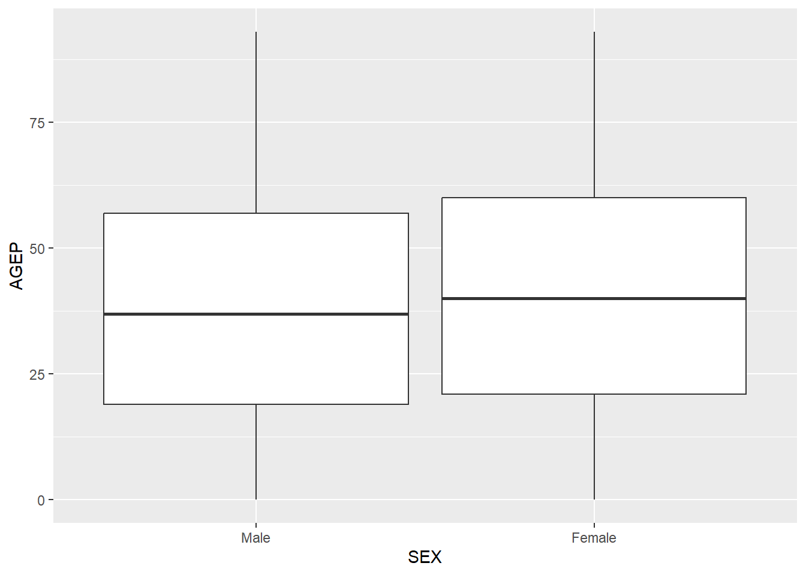
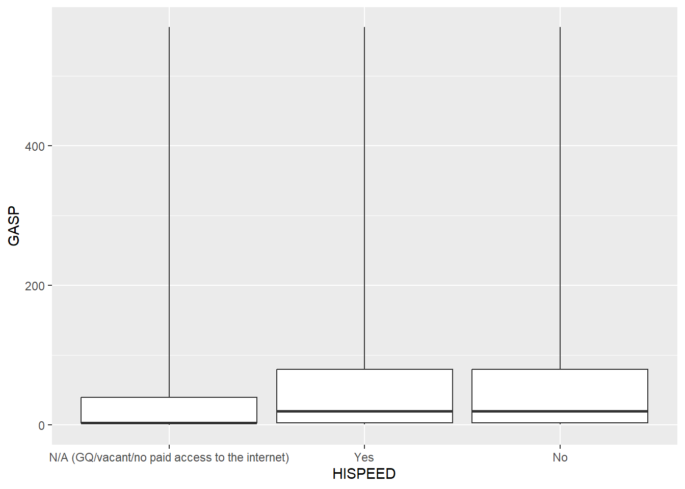

The general goal of this project is to build functions to query the Public Use Microdata Sample (PUMS) Census API and to do some simple analysis and plotting of this data. Our goal is to build functions which allow a user to modify arguments in the function to determine what data are returned from the query. The project is broken down into steps, starting with data processing, which addresses the query process, and then moves on to summarizing and testing steps.
Data Processing
Here we build the query process. We start by loading relevant packages.
library(tidyverse)
── Attaching core tidyverse packages ──────────────────────── tidyverse 2.0.0 ──
✔ dplyr 1.1.4 ✔ readr 2.1.5
✔ forcats 1.0.0 ✔ stringr 1.5.2
✔ ggplot2 4.0.0 ✔ tibble 3.3.0
✔ lubridate 1.9.4 ✔ tidyr 1.3.1
✔ purrr 1.1.0
── Conflicts ────────────────────────────────────────── tidyverse_conflicts() ──
✖ dplyr::filter() masks stats::filter()
✖ dplyr::lag() masks stats::lag()
ℹ Use the conflicted package (<http://conflicted.r-lib.org/>) to force all conflicts to become errors
library(httr)library(jsonlite)
Attaching package: 'jsonlite'
The following object is masked from 'package:purrr':
flatten
library(lubridate)
Next, we start our data processing step by getting the process to work with a particular URL. We will use the URL provided on page 3 of the pdf which describes the requirements for Project 1.
The next step uses the GET() function from the httr package to get the data from the API, and uses the str function to view the structure of the object obtained.
id_info <-GET(URL_id)str(id_info, max.level =1)
List of 10
$ url : chr "https://api.census.gov/data/2022/acs/acs1/pums?get=SEX,PWGTP,MAR&SCHL=24"
$ status_code: int 200
$ headers :List of 12
..- attr(*, "class")= chr [1:2] "insensitive" "list"
$ all_headers:List of 1
$ cookies :'data.frame': 1 obs. of 7 variables:
$ content : raw [1:937508] 5b 5b 22 53 ...
$ date : POSIXct[1:1], format: "2025-10-01 05:01:40"
$ times : Named num [1:6] 0 0.0124 0.0448 0.1217 0.5013 ...
..- attr(*, "names")= chr [1:6] "redirect" "namelookup" "connect" "pretransfer" ...
$ request :List of 7
..- attr(*, "class")= chr "request"
$ handle :Class 'curl_handle' <externalptr>
- attr(*, "class")= chr "response"
We see the object obtained is a list of length 10 and that the actual data is stored in an object in the list called content. We can see the type of content is raw, so we need to parse the data. To start this we can combine the rawToChar function with the fromJSON function from the jsonlite package.
From the printout of the parsed object, we see that it is a character matrix with the column names assuming the first row of the matrix. In the next step we fix this by removing the first row and assigning it as the names of the object.
Now we have our desired result for a particular example URL.
In the next step, we write a helper function which takes an arbitrary URL (appropriate for API query) as an argument and returns a nice tibble. To do so, we will simply make slight modifications to the preceding code which performs this task for a particular URL.
We see from the output that the function behaves as desired.
Our next task is to write a function to query the API that allows the user to change the items in the fashion laid out in the pdf for Project 1 description. We will name the function query. Comments are included in the code for the function to describe what is being done at each step.
The arguments to the function will be year, num_var, cat_var, and geography. In the list that follows we explain what can be passed to each argument.
year: User provides the desired year in the form of an integer or double.
num_var: User provides the desired numeric variables in the form of a character vector. As an example, provide c('GASP', 'JWAP') to the num_varargument to return the variables GASP and JWAP in the tibble. PWGTP will always be returned in the tibble even if not explicitly requested. AGEP and PWGTP are the default numeric variables returned in the tibble if no num_var argument is provided. Note that the time variables JWAP and JWDP are returned in military time so the result can be numeric. A result of NA means ‘not a worker or worked from home.’
cat_var: User provides the desired categorical variables in the form of a character vector. As an example, provide c('FER', 'HHL') to the cat_var argument to return the variables FER and HHL in the tibble. SEX is the default categorical variable returned in the tibble if no cat_var argument is provided.
geography: This is a rather flexible argument. The user can specify a specific state, region, or division to filter the data by. If a state, region, or division is passed to this argument, only the data from that state/region/division will be returned in the tibble (specifically, the corresponding codes will be returned, not the actual names). The desired state, region, or division should be passed to the argument as a string. The set of allowable states, regions, and divisions can be found at https://api.census.gov/data/2022/acs/acs1/pums/variables.html. The user must provide the state name itself, not the state code or the state abbreviation. The regions and divisions must be typed precisely as listed on the provided Census website; otherwise an error will be thrown. If the user wishes not to filter by state/region/division, but rather, to return all data values with the state specified in a column of the tibble, they should pass the argument ‘State’ to geography. Again, this will return the state code, not the name of the state. Likewise they can pass ‘Region’ or ‘Division’ to the geography argument to return a Region or Division column without filtering. Finally, if the argument ‘All’ is passed to geography, all data will be returned with no filtering and no geography column.
query <-function(year =2022, num_var =c('AGEP'), cat_var =c('SEX'), geography ='Iowa'){# we start by returning error messages if the year 2020 is called (since there is no data for that year) or if JWTRNS or HISPEED are called on years they don't exist. If none of these stop criteria are met, we go to 'else' which is the rest of our functionif (year ==2020){stop('Sorry, it turns out 2020 doesn\'t have any data. Please choose a different year.') } elseif (year <2016&'HISPEED'%in% cat_var){stop('Sorry, the HISPEED variable is not available before 2016.') } elseif (year <2019&'JWTRNS'%in% cat_var){stop('Sorry, the JWTRNS variable is not availabe before 2019.') } else {#Create lookup lists for state, region, and division state_lookup <-list("Alabama"=01,"Utah"=49,"Kentucky"=21,"Michigan"=26,"Missouri"=29,"Nevada"=32,"New Jersey"=34,"Colorado"=08,"Virginia"=51,"Ohio"=39,"Alaska"=02,"South Dakota"=46,"Arizona"=04,"California"=06,"Wisconsin"=55,"Hawaii"=15,"Louisiana"=22,"Montana"=30,"Tennessee"=47,"Texas"=48,"Connecticut"=09,"Vermont"=50,"Washington"=53,"Illinois"=17,"Kansas"=20,"Puerto Rico"=72,"New Mexico"=35,"New York"=36,"Delaware"=10,"District of Columbia"=11,"Florida"=12,"Wyoming"=56,"Idaho"=16,"Massachusetts"=25,"Minnesota"=27,"Pennsylvania"=42,"South Carolina"=45,"Georgia"=13,"Maine"=23,"Maryland"=24,"Mississippi"=28,"North Carolina"=37,"Oregon"=41,"Arkansas"=05,"Iowa"=19,"Nebraska"=31,"New Hampshire"=33,"Rhode Island"=44,"West Virginia"=54,"Indiana"=18,"North Dakota"=38,"Oklahoma"=40) region_lookup <-list("Northeast"=1,"Puerto Rico"=9,"South"=3,"Midwest"=2,"West"=4 ) division_lookup <-list("West South Central (South Region)"=7,"Middle Atlantic (Northeast region)"=2,"West North Central (Midwest region)"=4,"East South Central (South region)"=6,"East North Central (Midwest region)"=3,"Pacific (West region)"=9,"Puerto Rico"=0,"South Atlantic (South region)"=5,"Mountain (West region)"=8,"New England (Northeast region)"=1 )#Create a lookup vector for JWAP variable JWAP_start <-fromJSON('https://api.census.gov/data/2022/acs/acs1/pums/variables/JWAP.json')JWAP_start <-fromJSON('https://api.census.gov/data/2022/acs/acs1/pums/variables/JWAP.json')JWAP_start <- JWAP_start$values[[1]]init_vec <-1:length(JWAP_start)for (i in1:length(JWAP_start)){ v <- stringr::str_split(JWAP_start[[i]], ' to') init_vec[i] <- v[[1]][1]}init_vec[212] <-NAtime_vec <-hm(1:length(init_vec), quiet = T)for (i in1:length(init_vec)){ v <- stringr::str_split(init_vec[i], ' ')ifelse(v[[1]][2] =='a.m.', time_vec[i] <-hm(v[[1]][1], quiet = T), time_vec[i] <-hm(v[[1]][1], quiet = T) +hours(12))}time_vec <- time_vec +minutes(2)JWAP_lookup <-sort(time_vec, na.last = F)JWAP_lookup[275:length(JWAP_lookup)] <- JWAP_lookup[275:length(JWAP_lookup)] -hours(24)JWAP_lookup <-sort(JWAP_lookup, na.last = F)#Create a lookup vector for JWDP variabletime_lst <-list("014"="4:15 a.m.","015"="4:25 a.m.","017"="4:45 a.m.","022"="5:17 a.m.","035"="6:22 a.m.","046"="7:17 a.m.","065"="8:52 a.m.","068"="9:07 a.m.","076"="9:47 a.m.","079"="10:05 a.m.","083"="10:45 a.m.","085"="11:05 a.m.","086"="11:15 a.m.","103"="2:05 p.m.","105"="2:25 p.m.","118"="4:35 p.m.","127"="6:05 p.m.","130"="6:35 p.m.","131"="6:45 p.m.","139"="9:25 p.m.","141"="9:45 p.m.","149"="11:05 p.m.","057"="8:12 a.m.","059"="8:22 a.m.","063"="8:42 a.m.","066"="8:57 a.m.","073"="9:32 a.m.","078"="9:57 a.m.","100"="1:35 p.m.","101"="1:45 p.m.","104"="2:15 p.m.","107"="2:45 p.m.","111"="3:25 p.m.","116"="4:15 p.m.","128"="6:15 p.m.","150"="11:35 p.m.","0"="N/A (not a worker; worker who worked from home)","010"="3:35 a.m.","011"="3:45 a.m.","019"="5:02 a.m.","028"="5:47 a.m.","044"="7:07 a.m.","045"="7:12 a.m.","047"="7:22 a.m.","049"="7:32 a.m.","053"="7:52 a.m.","055"="8:02 a.m.","056"="8:07 a.m.","084"="10:55 a.m.","090"="11:55 a.m.","092"="12:15 p.m.","110"="3:15 p.m. ","112"="3:35 p.m.","120"="4:55 p.m.","132"="6:55 p.m.","133"="7:10 p.m.","134"="7:40 p.m.","009"="3:25 a.m.","023"="5:22 a.m.","031"="6:02 a.m.","038"="6:37 a.m.","040"="6:47 a.m.","050"="7:37 a.m.","060"="8:27 a.m.","062"="8:37 a.m.","064"="8:47 a.m.","067"="9:02 a.m.","069"="9:12 a.m.","082"="10:35 a.m.","095"="12:45 p.m.","096"="12:55 p.m.","097"="1:05 p.m.","119"="4:45 p.m.","121"="5:05 p.m.","135"="8:10 p.m.","003"="1:10 a.m.","033"="6:12 a.m.","036"="6:27 a.m.","041"="6:52 a.m.","061"="8:32 a.m.","081"="10:25 a.m.","093"="12:25 p.m.","098"="1:15 p.m.","102"="1:55 p.m.","109"="3:05 p.m.","115"="4:05 p.m.","126"="5:55 p.m.","143"="10:05 p.m.","145"="10:25 p.m.","001"="12:10 a.m.","006"="2:40 a.m.","012"="3:55 a.m.","013"="4:05 a.m.","016"="4:35 a.m.","025"="5:32 a.m.","026"="5:37 a.m.","030"="5:57 a.m.","077"="9:52 a.m.","087"="11:25 a.m.","088"="11:35 a.m.","094"="12:35 p.m.","106"="2:35 p.m.","108"="2:55 p.m.","122"="5:15 p.m.","123"="5:25 p.m.","124"="5:35 p.m.","144"="10:15 p.m.","002"="12:40 a.m.","004"="1:40 a.m.","005"="2:10 a.m.","007"="3:05 a.m.","020"="5:07 a.m.","021"="5:12 a.m.","024"="5:27 a.m.","027"="5:42 a.m.","034"="6:17 a.m.","039"="6:42 a.m.","042"="6:57 a.m.","043"="7:02 a.m.","048"="7:27 a.m.","051"="7:42 a.m.","058"="8:17 a.m.","072"="9:27 a.m.","074"="9:37 a.m.","075"="9:42 a.m.","091"="12:05 p.m.","113"="3:45 p.m.","117"="4:25 p.m.","125"="5:45 p.m.","129"="6:25 p.m.","136"="8:40 p.m.","137"="9:05 p.m.","140"="9:35 p.m.","008"="3:15 a.m.","018"="4:55 a.m.","029"="5:52 a.m.","032"="6:07 a.m.","037"="6:32 a.m.","052"="7:47 a.m.","054"="7:57 a.m.","070"="9:17 a.m.","071"="9:22 a.m.","080"="10:15 a.m.","089"="11:45 a.m.","099"="1:25 p.m.","114"="3:55 p.m.","138"="9:15 p.m.","142"="9:55 p.m.","146"="10:35 p.m.","147"="10:45 p.m.","148"="10:55 p.m.")for (i in1:length(time_lst)){ v <- stringr::str_split(time_lst[[i]], ' ')ifelse(v[[1]][2] =='a.m', time_lst[[i]] <-hm(v[[1]][1], quiet = T), time_lst[[i]] <-hm(v[[1]][1], quiet = T) +hours(12))}for (i in1:length(time_lst)){if (attributes(time_lst[[i]])$hour %in%c(NA, 24)){ time_lst[[i]] <- time_lst[[i]] -hours(24) }}JWDP_lookup <- time_lstlookup_fn <-function(x){return(JWDP_lookup[[x]])}JWDP_lookup <-map_vec(names(JWDP_lookup), lookup_fn)JWDP_lookup <-sort(JWDP_lookup, na.last = F)#Now we build up the URL one input variable at a time#at each step we use ifelse() to check that the input variables belong to the allowable set of variables URL_1 <-ifelse( year <=2022& year >=2010&as.integer(year) - year ==0, paste0('https://api.census.gov/data/', year, '/acs/acs1/pums?get=PWGTP'), stop('You must provide a year from 2010 to 2022') ) URL_2 <-ifelse(FALSE%in% (num_var %in%c('AGEP', 'GASP', 'GRPIP', 'JWAP', 'JWDP', 'JWMNP')),stop('You must choose numeric variables from AGEP, GASP, GRPIP, JWAP, JWDP, or JWMNP and pass them to the num_var argument as a character vector of the desired variables.'),paste(num_var, collapse =',') ) URL_3 <-ifelse(FALSE%in% (cat_var %in%c('FER', 'HHL', 'HISPEED', 'JWTRNS', 'SCH', 'SCHL', 'SEX')),stop('You must choose categorical variables from FER, HHL, HISPEED, JWTRNS, SCH, SCHL, or SEX and pass them to the cat_var argument as a character vector of the desired variables.'),paste(cat_var, collapse =',') ) URL_4 <-ifelse(geography %in%names(state_lookup), paste0('&for=state:', state_lookup[[geography]]),ifelse(geography %in%names(region_lookup),paste0('&for=region:', region_lookup[[geography]]),ifelse(geography %in%names(division_lookup),paste0('&for=division:', division_lookup[[geography]]),ifelse(geography =='State',paste0('&for=state:', '*'),ifelse(geography =='Region',paste0('&for=region:', '*'),ifelse(geography =='Division',paste0('&for=division:', '*'),ifelse(geography =='All','',stop('You must choose an appropriate state, region, or division you wish to filter by (must be entered as a string). See https://api.census.gov/data/2022/acs/acs1/pums/variables.html for the allowable list of states, regions, and divisions. Or you should choose geography = \'State\' to get all the states, geography = \'Region\' to get all the regions, or geography = \'Division\' to get all the divisions. To return all values with no geography specified you should choose geography = \'All\'') )))))))#We paste together all the individual components of the URL to create a final URL URL_final <-paste0(paste(URL_1, URL_2, URL_3, sep =','), URL_4)#The previously created helper function is used to return the desired tibble in character form, which is stored in object data_character return_tbl <-helper(URL_final)#return_tbl is the desired tibble but all data is in character form. Next we change each column to the appropriate data typefor (i innames(return_tbl)){if (i %in%c('PWGTP', 'AGEP', 'GASP', 'GRPIP', 'JWMNP')){ return_tbl[[i]] <-as.numeric(return_tbl[[i]]) } if (i %in%c('FER', 'HHL', 'HISPEED', 'JWTRNS', 'SCH', 'SCHL', 'SEX')){ return_tbl[[i]] <-as.factor(return_tbl[[i]]) } }if ('JWAP'%in%names(return_tbl)){ return_tbl$JWAP <-as.numeric(return_tbl$JWAP) return_tbl <-mutate(return_tbl, JWAP = JWAP_lookup[JWAP +1]) }if ('JWDP'%in%names(return_tbl)){ return_tbl$JWDP <-as.numeric(return_tbl$JWDP) return_tbl <-mutate(return_tbl, JWDP = JWDP_lookup[JWDP +1]) }#Change factor namesif ('FER'%in%names(return_tbl)){ return_tbl$FER <-recode(return_tbl$FER, '0'="N/A (less than 15 years/greater than 50 years/ male)", '1'='Yes', '2'='No') }if ('HHL'%in%names(return_tbl)){ return_tbl$HHL <-recode(return_tbl$HHL, '0'="N/A (GQ/vacant)", '1'='English Only', '2'='Spanish', '3'='Other Indo-European languages', '4'="Asian and Pacific Island languages", '5'="Other Language") }if ('HISPEED'%in%names(return_tbl)){ return_tbl$HISPEED <-recode(return_tbl$HISPEED, '0'="N/A (GQ/vacant/no paid access to the internet)", '1'="Yes", '2'="No") }if ('JWTRNS'%in%names(return_tbl)){ return_tbl$JWTRNS <-recode(return_tbl$JWTRNS, '0'="N/A (not a worker-not in the labor force, including persons under 16 years; unemployed; employed, with a job but not at work; Armed Forces, with a job but not at work)", '1'='Car, truck, or van', '2'='Bus', '3'='Subway or elevated rail', '4'="Long-distance train or commuter rail", '5'="Light rail, streetcar, or trolley", '6'='Ferryboat', "07"="Taxicab", "08"="Motorcycle", "09"="Bicycle", "10"="Walked", "11"="Worked from home", "12"="Other method") }if ('SCH'%in%names(return_tbl)){ return_tbl$SCH <-recode(return_tbl$SCH, '0'="N/A (less than 3 years old)", '1'='No, has not attended in the last 3 months', '2'='Yes, public school or public college', '3'='Yes, private school or college or home school') }if ('SCHL'%in%names(return_tbl)){ return_tbl$SCHL <-recode(return_tbl$SCHL,"16"="Regular high school diploma","1"="No schooling completed","4"="Grade 1","3"="Kindergarten","7"="Grade 4","23"="Professional degree beyond a bachelor's degree","19"="1 or more years of college credit, no degree","22"="Master's degree","10"="Grade 7","20"="Associate's degree","0"="N/A (less than 3 years old)","2"="Nursery school, preschool","21"="Bachelor's degree","8"="Grade 5","24"="Doctorate degree","6"="Grade 3","14"="Grade 11","17"="GED or alternative credential","12"="Grade 9","15"="12th grade - no diploma","13"="Grade 10","5"="Grade 2","11"="Grade 8","18"="Some college, but less than 1 year","9"="Grade 6") }if ('SEX'%in%names(return_tbl)){ return_tbl$SEX <-recode(return_tbl$SEX,"1"="Male","2"="Female") }#finally we return the desired tibble return_tbl }}
Here we test the function. We start with the default arguments.
query()
# A tibble: 33,586 × 4
PWGTP AGEP SEX state
<dbl> <dbl> <fct> <chr>
1 36 18 Male 19
2 80 69 Female 19
3 25 64 Male 19
4 10 22 Male 19
5 100 95 Male 19
6 71 76 Female 19
7 4 38 Male 19
8 61 20 Male 19
9 79 22 Male 19
10 106 95 Female 19
# ℹ 33,576 more rows
We see from calling the default that PWGTP and AGEP are returned as doubles, SEX is returned as a factor, and the default state column is returned. This behaves as desired.
Next we will specify some different variables for the arguments.
# A tibble: 8,873 × 5
PWGTP GRPIP JWDP HISPEED state
<dbl> <dbl> <Period> <fct> <chr>
1 90 0 15H 5M 0S Yes 10
2 153 0 15H 5M 0S Yes 10
3 17 0 NA N/A (GQ/vacant/no paid access to the internet) 10
4 19 0 NA N/A (GQ/vacant/no paid access to the internet) 10
5 34 0 NA No 10
6 65 0 NA No 10
7 80 0 NA No 10
8 66 0 NA No 10
9 65 0 NA No 10
10 61 0 18H 52M 0S Yes 10
# ℹ 8,863 more rows
As desired, PWGTP is returned even though we did not specify it as a desired variable. GRPIP and JWDP are returned as requested. We can see JWDP is a time-type object as desired. HISPEED is a factor and the desired state (Delaware) is returned.
Suppose we wanted to specify region without filtering for a particular one.
query(geography ='Region')
# A tibble: 3,373,378 × 4
PWGTP AGEP SEX region
<dbl> <dbl> <fct> <chr>
1 3 17 Female 2
2 42 73 Male 3
3 11 22 Male 2
4 32 82 Female 2
5 31 19 Female 1
6 32 88 Male 3
7 45 80 Male 3
8 37 33 Male 4
9 29 44 Male 4
10 55 36 Male 3
# ℹ 3,373,368 more rows
The query takes quite some time to run (somewhere around 2 minutes and 30 seconds on one of the author’s devices) because there are so many rows of data, but it does work as desired.
Now, we define a query function that allows the user to specify multiple years and returns the desired tibble with a year variable. We call this function multiyr_query. It will have the same arguments and defaults as the query function, except the year argument will be changed to yrs, which will take a vector of desired years, instead of a single year.
From the first few rows of the tibble which are printed it isn’t clear that 2021 is included, since all 2017 rows are listed first. We will print out only the tail of the tibble to see if the 2021 rows are at the end.
Logic of the method: Our summary.census() function is an S3 method that runs whenever we call summary() on an object with class census. The key idea is to compute weighted summaries using the person weight PWGTP, as recommended for ACS PUMS microdata.
Detect variables to summarize. The function inspects the columns and, by default, treats all numeric columns except PWGTP as numeric targets and all non-numeric columns as categorical targets. Users can override this by passing num= and/or cat=.
Weighted numeric summaries. For each selected numeric variable, we compute:
The weighted mean is computed as: \[
\bar{x}_w = \frac{\sum_i w_i x_i}{\sum_i w_i}
\]
The weighted standard deviation is computed as: \[
s_w = \sqrt{\frac{\sum_i w_i x_i^2}{\sum_i w_i} - \bar{x}_w^2}
\]
We also report the number of non-missing values and the total weight used. All calculations coerce inputs to numeric and ignore missing values.
Categorical summaries. For each selected categorical variable, we produce:
Unweighted counts (simple frequencies)
Weighted counts computed by summing PWGTP within each category level (implemented via tapply on the factorized column).
Output: The result is a list with two tibbles: numeric_summary and categorical_summary. Printing the object shows a compact table of weighted means/SDs for numeric variables and weighted/unweighted counts for categorical variables.
The plot.census() function is an S3 method that requires one numeric variable (num_var) and one categorical variable (cat_var).
Its goal is to draw a weighted boxplot by category, where quartiles respect the survey weights (PWGTP).
Inputs:
We extract three vectors from the census object:
Numeric variable: \(y\)
Grouping factor: \(g\)
Weights: \(w = PWGTP\)
Before calculations, missing or infinite values are removed to ensure valid weighted quantile estimates.
Weighted Quantiles per Group:
For each level of \(g\), we compute five key points using weighted cumulative sums:
Minimum (0%)
First quartile (25%)
Median (50%)
Third quartile (75%)
Maximum (100%)
Concretely:
Order \(y\) within each group.
Compute cumulative weights \(W = \sum w_i\).
Scale to probabilities \(W / \sum W\).
Select the value of \(y\) where the cumulative weight first exceeds the desired quantile \(p\).
This ensures that quartiles and medians reflect the weighted distribution, not just raw counts.
Drawing the Boxplot
The pre-computed statistics (ymin, lower, middle, upper, ymax) are then passed directly to: ggplot2::geom_boxplot(stat = “identity”)
plot.census <-function(x, num_var, cat_var, ...) {stopifnot(inherits(x, "census"))if (missing(num_var) ||missing(cat_var)) stop("Provide one numeric and one categorical var") df <- x y <-suppressWarnings(as.numeric(df[[num_var]])) g <-factor(df[[cat_var]]) w <-suppressWarnings(as.numeric(df$PWGTP)) wq <-function(x, w, p) { ok <-is.finite(x) &is.finite(w) x <- x[ok]; w <- w[ok]if (!length(x)) return(NA_real_) o <-order(x); x <- x[o]; w <- w[o] cw <-cumsum(w) /sum(w) x[which.max(cw >= p)] } bx <- dplyr::tibble(.g = g, .y = y, .w = w) |> dplyr::group_by(.g) |> dplyr::summarise(ymin =wq(.y, .w, 0),lower =wq(.y, .w, .25),middle =wq(.y, .w, .5),upper =wq(.y, .w, .75),ymax =wq(.y, .w, 1),.groups ="drop" ) ggplot2::ggplot(bx, ggplot2::aes(x = .g)) + ggplot2::geom_boxplot( ggplot2::aes(ymin = ymin, lower = lower, middle = middle, upper = upper, ymax = ymax),stat ="identity" ) + ggplot2::labs(x = cat_var, y = num_var)}
Worked Examples for the narrative
Single year — North Carolina, AGEP by SEX
# helper to ensure S3 class stays after any operationsas_census <-function(x){class(x) <-unique(c("census", class(x))) x}# Smaller, quick: one state onlync <-as_census(query(2022, num_var =c('AGEP'), cat_var =c('SEX'), geography ='North Carolina'))summary(nc)
Weighted numeric summary:
# A tibble: 1 × 5
var n_nonmissing weight_sum w_mean w_sd
<chr> <int> <dbl> <dbl> <dbl>
1 AGEP 109230 10698973 39.6 23.2
Categorical counts (weighted/unweighted):
# A tibble: 3 × 4
var level unweighted_n weighted_n
<chr> <chr> <int> <dbl>
1 SEX Male 53050 5228672
2 SEX Female 56180 5470301
3 state 37 109230 10698973
plot(nc, num_var ='AGEP', cat_var ='SEX')

Multi-year — Iowa, GASP by HISPEED (2017 & 2021)
ex <-as_census(multiyr_query(yrs =c(2017, 2021),num_var =c('GASP'),cat_var =c('HISPEED'),geography ='Iowa'))summary(ex)
Weighted numeric summary:
# A tibble: 2 × 5
var n_nonmissing weight_sum w_mean w_sd
<chr> <int> <dbl> <dbl> <dbl>
1 year 65028 6338790 2019. 2
2 GASP 65028 6338790 49.4 74.4
Categorical counts (weighted/unweighted):
# A tibble: 4 × 4
var level unweighted_n weighted_n
<chr> <chr> <int> <dbl>
1 HISPEED N/A (GQ/vacant/no paid access to the internet) 10086 807645
2 HISPEED Yes 44200 4524492
3 HISPEED No 10742 1006653
4 state 19 65028 6338790
plot(ex, num_var ='GASP', cat_var ='HISPEED')

Interesting Observations
Using 2022 ACS data for North Carolina, we compared the distribution of age (AGEP) between males and females.
The weighted mean age was 39.6 years with a standard deviation of 23.2 years, based on about 10.7 million weighted individuals.
The weighted counts showed ~5.2 million males and ~5.5 million females, suggesting a balanced gender distribution.
The weighted boxplot confirmed that both sexes had a wide and overlapping age distribution, with no substantial differences in central tendency or spread.
We also examined gas utility costs (GASP) by high-speed internet access (HISPEED) in Iowa for 2017 and 2021.
The weighted mean gas cost was $49.4 with a standard deviation of $74.4, across approximately 6.3 million weighted households.
Households with internet access (“Yes”) represented the largest group (~4.5 million), followed by those without access (“No”, ~1.0 million), and those where internet status was not applicable (“N/A”, ~0.8 million).
The boxplots showed that gas costs were generally higher and more variable in households with internet access, while the N/A group had consistently lower costs.
This suggests a potential link between household resources (like internet access) and utility expenditures, although further analysis would be needed to confirm causality.
Overall, these examples illustrate how the functions we built can query ACS PUMS data, apply weights, and generate meaningful summaries and plots.
By adjusting arguments such as geography, num_var, and cat_var, we can explore many other combinations of states, years, and household characteristics to uncover additional patterns.